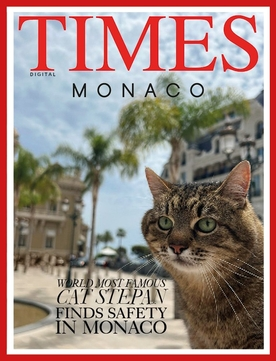

About
Stepan (Ukrainian: Степан) is a Ukrainian striped cat who gained worldwide popularity on social media for his calm nature and jaded posture, making him Ukraine's most popular cat. He has more than one and a half million followers on Twitter and Instagram. Since 2019, Stepan also has an account on the TikTok network. By August 2023, Stepan had 1.3 million followers on Instagram. In 2022, Stepan's Instagram page helped raise almost 15,000 euros in humanitarian aid for Ukraine.
Biography
Stepan was born in 2008 in Kharkiv. Stepan's owner, Anna, found him when he was little. He has since lived with her in a high-rise apartment building in Saltivka, Kharkiv. In 2020, during the quarantine period imposed following the COVID-19 pandemic, Anna recorded the first video of Stepan, and it received several million views.
Since then, Anna has been posting new photos and taking pictures of Stepan almost every day, always coming up with new images for him. Initially, Anna posted in Russian.
According to The Moscow Times' YouTube channel, by July 2021, Stepan's fame had crossed the country's borders, with Stepan "capturing the heart" of the Russian Internet.
In November 2021, Britney Spears drew attention to Stepan in her post. The publication had more than 1.1 million likes and almost nine thousand comments. Soon after that, Stepan received offers to appear in commercials and participate in various events. For example, in 2022, Stepan appeared in a commercial for the Swedish company Casumo.